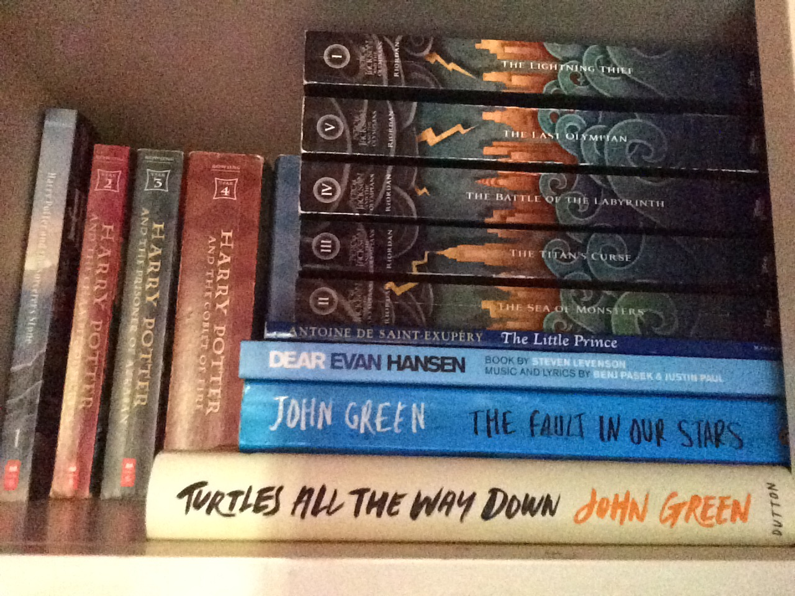
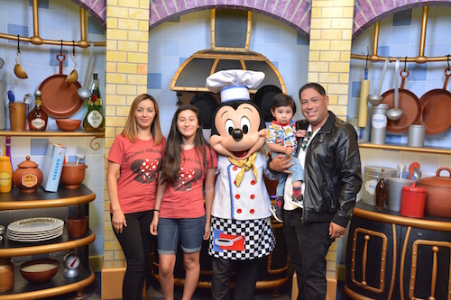

I have good grades in school, my GPA has never dropped below a 3.5.
I am currently learning piano and I’ve been told my drawings are really good.
My hobbies include reading, drawing and playing piano.
I having multiple shelves full of books and I doubt I can choose a favorite
but I will always enjoy John Green’s books. I like to draw things, from objects in my room
to original characters of my imagination. I also enjoy making melodies on my keyboard.

I have multiple interests, but my favorite will always be listening to music.
I love music from bands to musicals, I even sometimes like to imagine I could
create a musical of my own. I also really like watching shows and youtube.
I know, it seems lazy, but they give me lots of inspiration and an escape from reality when I need it.
I live with my grandma, grandpa, mom, dad, brother and my dog-child Hazel.
My grandpa and dad are the workers of the house, my dad sells phone products.
My grandma usually stays home and my mom is finishing up college.
